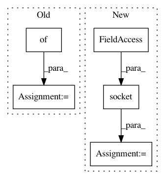

273be0d5affb7d9f3367b1e01dc3abc3b790a73e,service/server.py,BertServer,__init__,#BertServer#Any#,26
Before Change
self.logger = set_logger("VENTILATOR")
self.pending_client = {}
self.pending_checksum = {}
def close(self):
self.logger.info("shutting down...")
for p in self.processes:
After Change
self.frontend.bind("tcp://*:%d" % self.port)
// pair connection between frontend and sink
self.sink = self.context.socket(zmq.PAIR)
self.sink.bind("ipc://*")
// backend facing workers
self.backend = self.context.socket(zmq.PUSH)
In pattern: SUPERPATTERN
Frequency: 3
Non-data size: 5
Instances
Project Name: hanxiao/bert-as-service
Commit Name: 273be0d5affb7d9f3367b1e01dc3abc3b790a73e
Time: 2018-11-25
Author: hanhxiao@tencent.com
File Name: service/server.py
Class Name: BertServer
Method Name: __init__
Project Name: hanxiao/bert-as-service
Commit Name: dd3c13d51975d7ca569681dd19639473d19e8e85
Time: 2018-12-14
Author: hanhxiao@tencent.com
File Name: server/bert_serving/server/__init__.py
Class Name: BertWorker
Method Name: run
Project Name: home-assistant/home-assistant
Commit Name: 98364248d4cada5f832a8e735f5e286889c53ade
Time: 2016-08-23
Author: mail@fabian-affolter.ch
File Name: homeassistant/components/graphite.py
Class Name:
Method Name: setup